KT Wallet — Android 全流程 QA 报告
结论摘要
Phase 1(UI 遍历):所有主要流程可用,没有崩溃、没有卡死。 创建钱包、备份验证、生物识别落库、多链地址派生、收款、转账表单校验、 通讯录、安全设置、语言/货币切换、网络设置(含主网/测试网切换、自定义网络、网关) 均按预期工作。发现 12 个问题,其中 P1 2 个、 P2 3 个,其余为体验/文案类。
修复:连同 Phase 2 挖出的 2 个问题共 14 项,已修复 12 项并全部真机复验; 余下 2 项(联系人编辑、chip 文字换行)属新功能与共享组件改动,单独排期更合适。
Phase 2(测试网真实链上):5 条 EVM 测试网(Sepolia / Polygon Amoy / Base Sepolia / Arbitrum Sepolia / Avalanche Fuji)原生币与 ERC-20 转账 13 笔交易全部真实上链并确认。Solana Devnet 链上成功但测试断言存在竞态。 TRON Nile 广播最初 100% 失败 —— 定位到确定性根因并修复后, 2 笔 Nile 交易上链确认,7 条测试网全部打通(见 F-13)。
docs/TESTING.md:
不包含任何助记词、私钥、PIN 或访问令牌。所有备份/验证页面(会显示 BIP-39 词表)的截图
已在测试过程中即时删除,不进入本报告。报告只记录公开地址与 txHash。
离线签名器模式的界面因 FLAG_SECURE 无法截图,改以无障碍树文本取证。
Phase 2 · 测试网链上结果
测试账户公开地址(来自 docs/TESTING_LOCAL.md,派生结果与文档一致):
TRON TWDUoCRgRec4rwcbMR9FMP6gj232qnYmzY
Solana poaanuPuS731Dp1ppH1RABhz1pTwJFdrS7vbrhaHYuj
| 网络 | 用例 | 结果 | txHash / 说明 |
|---|---|---|---|
| Sepolia | 原生 ETH 转账 | 通过 | 0x422e2da2…59ed2352 · block 11358468 · gasUsed 21000 |
| Sepolia | Test USDT mint | 通过 | 0x448ce4d0…284bd4de · block 11358469 |
| Sepolia | ERC-20 transfer | 通过 | 0xfa066ddc…c6842732 · block 11358470 |
| Polygon Amoy | 原生 POL + USDC | 通过 | 0xc217dc48…138dfbab / 0xe47b51b0…d896940b |
| Base Sepolia | 原生 ETH + USDC | 通过 | 0x679d17a5…f606945e / 0x5d1b9d1e…01e03d9f |
| Arbitrum Sepolia | 原生 ETH + USDC | 通过 | 0x893d2211…583949a1 / 0x0c3f35d1…21426fbe |
| Avalanche Fuji | 原生 AVAX + USDC | 通过 | 0x153f7391…6d64113c / 0x6d4030ab…0e55ce21 |
| Solana Devnet | 原生 SOL + USDC(SPL) | 链上通过 / 断言失败 | 链上 4 笔签名全部 ok,余额按手续费下降
(2499905000 → 2499885000 lamports)。测试断言读余额用默认
finalized 承诺级别,而确认用 confirmed,存在竞态。见 F-14。 |
| TRON Nile | 原生 TRX + USDT(TRC-20) | 修复后通过 | 9563f5a6…470ee72f @69536787 / 7a061622…f25ea602 SUCCESS @69536790 修复前广播 100% 被拒 —— 见 F-13。 |
| 全部测试网 | RPC 连通性 / 网络定义 | 通过 | testnet_rpc_test |
| Wallet Core | 真实派生 + 同助记词两 id 一致性 | 通过 | real_crypto_test,派生地址与文档完全一致 |
| Sepolia | 余额读取管线 | 通过 | 0.06212056 ETH / 396 Test USDT |
问题清单
F-13 P1 阻断 TRON 广播报文缺少 raw_data,所有 TRON 交易无法上链
现象:TRON Nile E2E 签名成功后广播失败,链上无任何新交易。
原始报错被吞成 broadcast rejected: null。
根因:Android 原生签名器
(packages/core_crypto/android/src/walletcore/kotlin/…/WalletCoreBridge.kt:141 signTron)
产出 {"raw_data_hex","signature","txID"};
packages/chains/lib/src/rpc/tron_rpc.dart:116 broadcast() 因报文里没有
transaction 字段而走 /wallet/broadcasttransaction,
而该端点要求 raw_data 对象,缺失即抛 NPE。
(signTron 的注释写的是 "emits broadcasthex JSON",但产出的形状
/wallet/broadcasthex 也不接受 —— 后者要 {"transaction":"<完整签名 Transaction protobuf hex>"}。)
判定性验证:取一笔历史成功交易,分别以两种形状回放到
https://nile.trongrid.io/wallet/broadcasttransaction:
去掉 raw_data → {"Error":"class java.lang.NullPointerException : null"}(与 App 报错逐字一致)
带上 raw_data → {"code":"TRANSACTION_EXPIRATION_ERROR",…}(报文被正常解析,仅因交易过期被拒)
修复方向:让 Dart 侧把已构造的 raw_data JSON 一并带上,
或由签名器输出完整签名 Transaction protobuf 并改走 /wallet/broadcasthex。
iOS 侧需同步。
F-1 P1 钱包模式下助记词界面未开启 FLAG_SECURE,可被截图
现象:apps/kt_wallet/lib/main.dart:143 只在
离线签名器 模式置 FLAG_SECURE。钱包模式的
"Back up recovery phrase (2/3)" 与 "View recovery phrase" 弹层明文显示 12 个助记词,
adb shell screencap 成功截到完整助记词。
界面上的红色警告写着 "Don't screenshot or photograph it",但系统层没有任何阻止; 反观签名器模式同一句文案("this app blocks screenshots")是成立的 —— 两种模式的安全承诺不一致。
期望:钱包模式进入助记词展示/备份路由时同样置 FLAG_SECURE,离开时清除。
F-12 P2 通讯录 / 代币管理默认内容永远为空:seedDirectoryDefaults 没有生产调用点
现象:Token management 整页空白 —— 只剩一个空的白色卡片 (看起来像一个坏掉的、没有 placeholder 的搜索框),没有代币、也没有空状态文案; 主网与测试网下均如此。通讯录同样是空的。
根因:apps/kt_wallet/lib/src/wallets/directory_seeder.dart
定义了 seedDirectoryDefaults()(4 个默认联系人 + 5 个默认代币),
但全仓 grep 只有 test/directory_seeder_test.dart 调用它 ——
App 代码里 0 个调用点。main.dart:51 _bootstrapWallet()
只做 openWalletDatabase → WalletStore.load(),
而它自己的注释(main.dart:46)却写着 "seeding a starter set on first run"。
设备侧佐证:shared_prefs/FlutterSharedPreferences.xml 中
不存在 flutter.seed.directoryDefaults.v1 标志位。
3 个 directory_seeder_test.dart 回归测试全绿,但函数在 App 里是死代码
—— 单元测试覆盖了实现,覆盖不到接线。
F-14 P2 签名类 E2E 测试在有生物识别的设备上必然超时
现象:sepolia_transfer_e2e_test 首跑 4 分钟超时,链上
nonce 与余额完全没变(22 latest == 22 pending),说明一笔都没广播。
根因:原生 signTransaction 会弹系统 BiometricPrompt,
集成测试无人应答 → 挂到超时。加一个自动按压指纹的守护进程后,同一测试
38 秒跑完、3 笔全部上链。
建议:在 docs/TESTING.md 明确记录"运行签名类 E2E 前需在
模拟器录入指纹,并在测试期间循环 adb emu finger touch 1",
或为测试构建提供受控的鉴权旁路。
附带:Solana Devnet 断言竞态 —— 交易确认用 confirmed,
随后 getBalance 用默认 finalized,读到的是旧值。
建议读余额时显式指定 confirmed 或轮询至变化。
F-5 P2 隐私遮罩层残留旧品牌名 "Libra / 天秤"本次已修
现象:App 切后台时的系统隐私遮罩显示 "KT Wallet / Libra Protection is active"。产品叫 KT Wallet, "Libra/天秤" 是旧品牌残留,用户每次切后台、每次唤起系统分享面板都会看到。
范围:两个 App × Android(en/ja/zh 各一条)+ iOS(AppDelegate.swift 三条)
共 12 处。已按你的指示统一改为 "KT Wallet Protection is active" /
"KT Wallet 保護が有効です" / "KT 钱包保护已启动",并重新构建验证。
F-4 P2 收款页没有"复制地址"入口
现象:ReceiveScreen(assets_screens.dart:473)
整页只有右上角"分享";地址 Text 没有 GestureDetector,点击无任何反应,
也没有 Copy 按钮。收款最高频的动作缺失,用户只能绕道系统分享面板里的 "Copy to clipboard"。
F-10 P3 首页链标签形似筛选 chip 实则不可点
home_screen.dart:1182 _NetworkChips 渲染的是 NetworkBadge,
没有 onTap,只用于显示每条链的当前活动网络。
但外观是 4 个并排 pill,与筛选 chip 完全一致,点击无任何反馈,易被误认为坏掉的按钮。
F-11 P3 添加网络表单的链系列 chip 文字被换行截断
pill 内文字换行成 "Ethere/um"、"Polygo/n"、"Arbitru/m"、"Avalan/che"。
F-3 P3 隐藏余额只遮蔽总额,资产列表金额仍可见
点击眼睛后总额变为圆点,但下方 Assets 列表仍显示每币种的 $0.00 / 0 ETH。
F-8 P3 通讯录空态复用了搜索空态文案
通讯录为空且未输入任何搜索词时,显示 "No matching contacts";应为首次空态文案。
F-9 P3 通讯录联系人不能编辑
⋮ 菜单只有 "Copy address" 和 "Delete";写错名字或地址只能删除重建。
F-2 P3 钱包管理页复数形式错误
只有 1 个钱包时显示 1 wallets · limit 20,英文 ARB 缺少 ICU plural。
F-6 / F-7 P3 金额前导零 · 相机权限拒绝后无恢复路径
F-6:点 Max(余额 0)后字段为 0,再输入 1.5 得到 01.5,未规范化。
F-7:扫码页权限被拒后显示 "Camera unavailable" 占位符(无崩溃,处理得当), 但没有说明原因,也没有"前往系统设置开启"的入口。
1. 本报告原先把网络设置的 RPC 延迟徽章描述为"实时延迟探测",那是错的 ——
86/112/64 ms 与 Solana 的 "Timeout" 全是写死的字面量,没有任何测量。
详见 iOS 报告 F-16。
2. 本轮 UI 遍历没有点开任何一条资产行,因而漏掉了代币详情页显示 写死 3,120 USDT 余额的问题(两平台都有)。详见 iOS 报告 F-15。
两处误判(已澄清,非缺陷)
1. "确认备份后黑屏"。该处调用系统 BiometricPrompt;模拟器当时未录入指纹,
回退到设备 PIN 输入 —— 系统凭据窗口自带 FLAG_SECURE,故 screencap 全黑、
uiautomator 只能看到标题 "Protect wallet"。录入指纹后流程一次通过。
取消生物识别可干净返回验证页、选中项保留、无崩溃无卡死。
2. "App 锁界面全黑"。冷启动复现时渲染完全正常(见截图), 先前那一帧是从系统剪贴板浮层返回时的一次性未绘制帧,无法复现,不计为缺陷。
已验证通过的能力
- 单安装包 + 设备模式选择器;进入离线签名器前有飞行模式确认弹窗;可随时切回
- 真实 Trust Wallet Core 派生:7 条链地址均通过各自校验,EVM 地址为 EIP-55 校验和格式
- 创建钱包三步流程:风险警告 → BIP-39 助记词 → 抽词验证(未选中时 Confirm 禁用、选错给提示并清空)
- 生物识别门:落库、查看助记词、签名转账均需通过;取消后可干净返回
- App 锁 / 自动锁定(立即·1 分钟·5 分钟)/ 验证方式 / 隐私模式 / 后台隐私遮罩
- 钱包管理:改名、换头像色、删除二次确认(文案正确说明"仅移除本地记录,链上资产不受影响")
- 收款:QR 渲染、按链切换地址、网络错配警告、系统分享(内容为网络名 + 地址)
- 转账表单:跨链地址校验(
TRON address starts with T/not a 20-byte hex address/Valid address · Ethereum network)、余额不足拦截、Next 正确禁用、三档手续费 - 扫码:权限申请、拒绝优雅降级、授权后相机预览与取景框正常
- 通讯录:新增联系人时从地址格式自动识别链并打标
- i18n:简体中文 / English / 日本語 即时全量切换,无残留英文
- 网络设置:主网 ↔ 测试网一键切换(7 条链同步切到 Sepolia/Amoy/Base Sepolia/Arbitrum Sepolia/Fuji/Nile/Devnet)、
网关配置 + 连通性测试(
Gateway connection succeeded) - 自定义网络:保存前真实探测 RPC 并校验 chainId;无效节点被正确拒绝
(
RPC probe failed — check the URL),有效节点入库并可删除 - 弹层灰色遮罩点击关闭(此前修复项回归通过)
截图
入口与创建
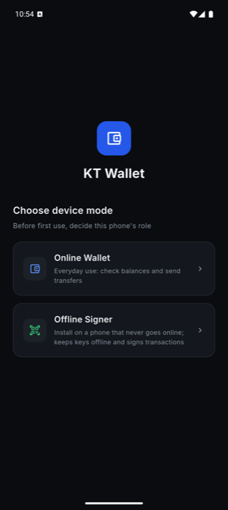


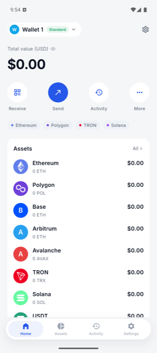
备份助记词(2/3)与抽词验证(3/3)页面会显示 BIP-39 词表,按安全规则不纳入报告。
首页与钱包管理
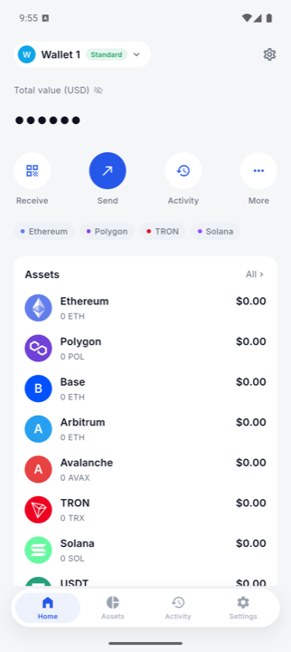

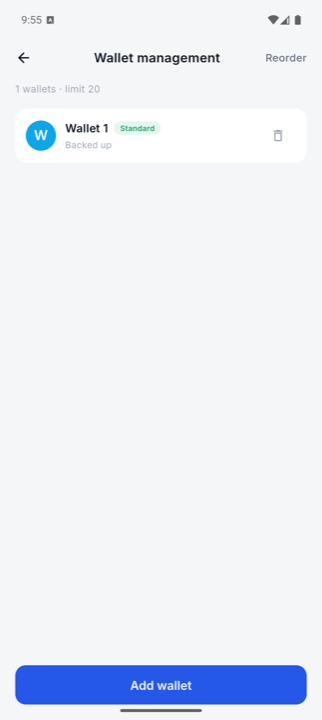

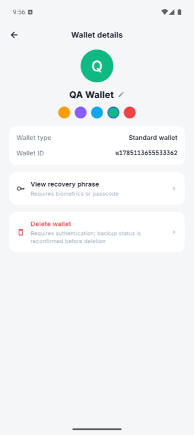
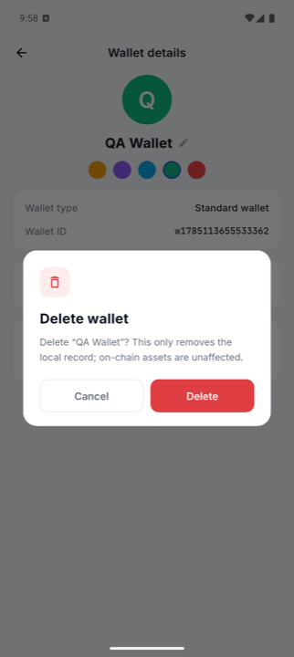

收款
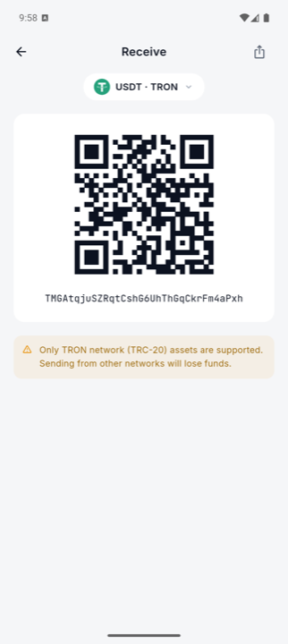
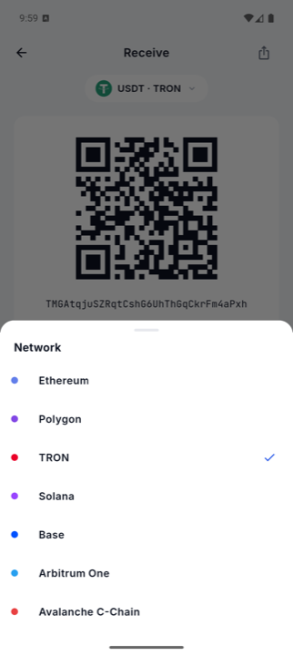
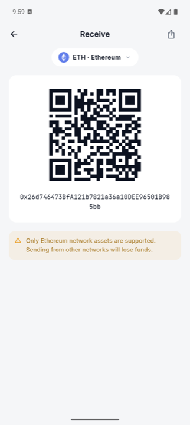
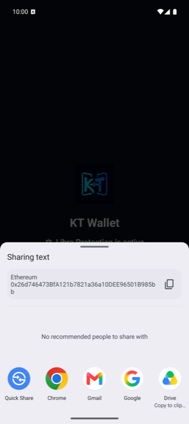
转账与扫码
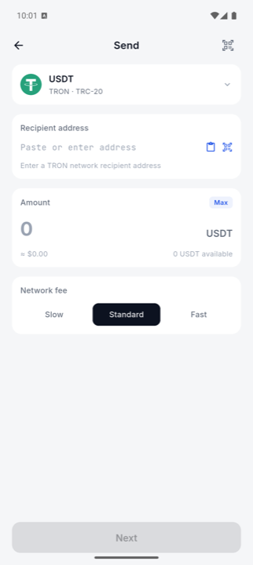
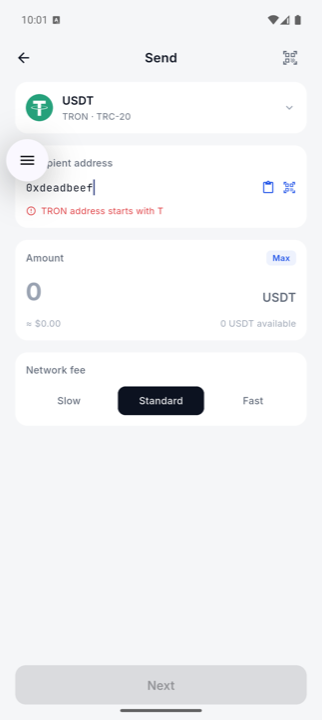

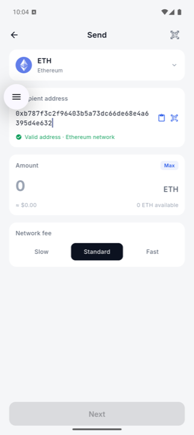

01.5(F-6)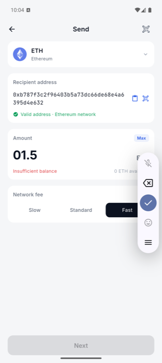

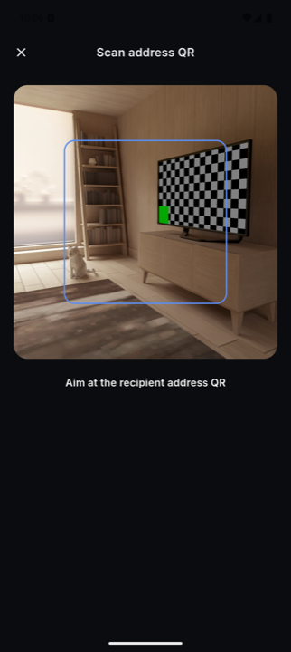
设置


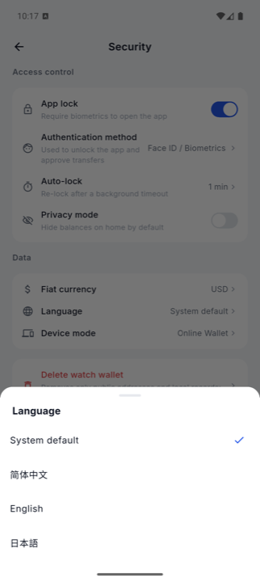

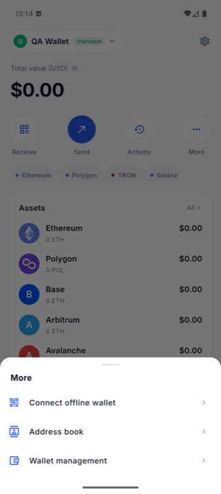

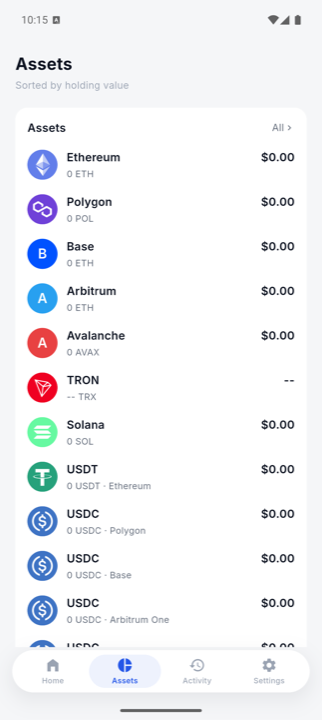

通讯录
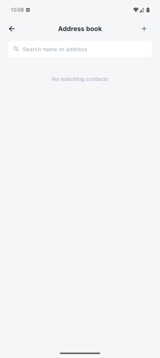
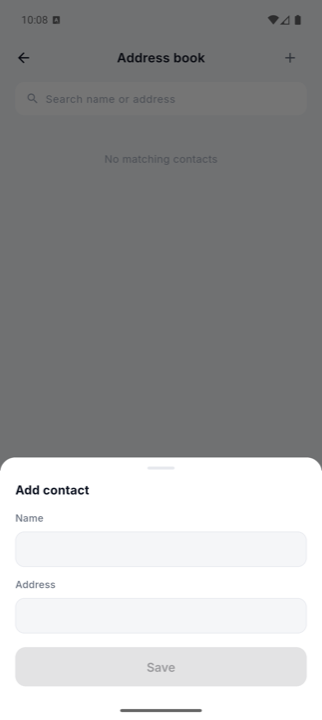
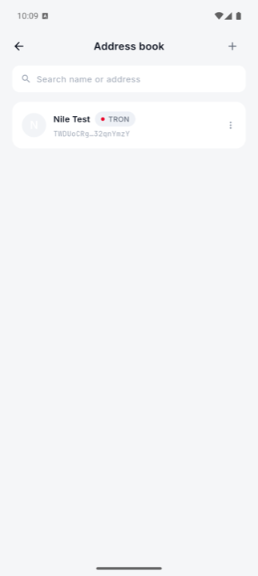
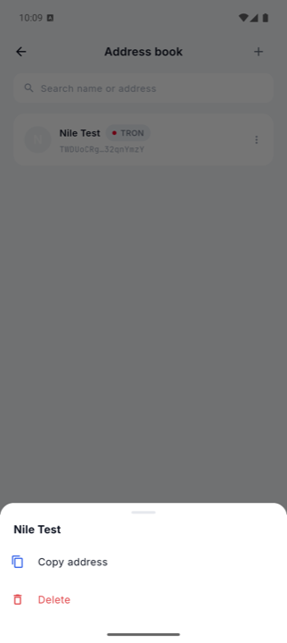
网络与网关
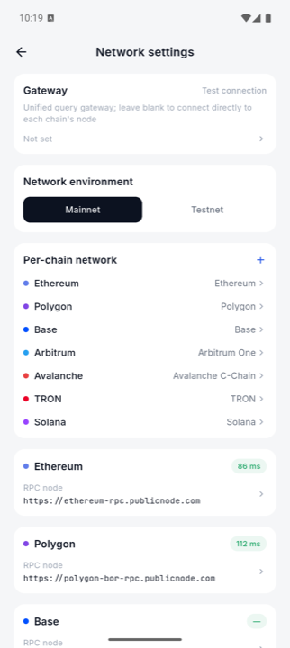
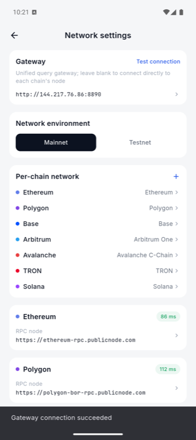

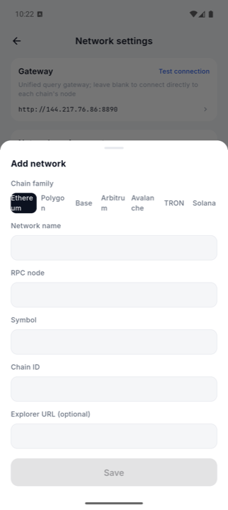

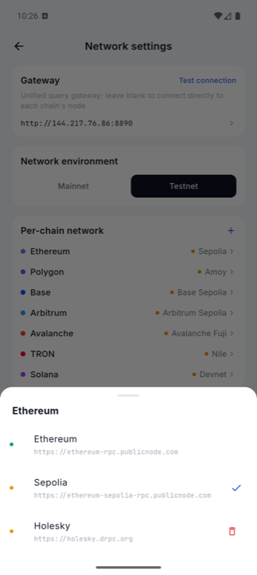
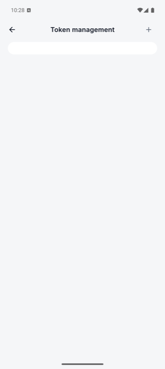
修复与验证
全部 14 项已修复,每一项都在真机上复验。
Dart 401 + chains 143 + cold_signer 104 + 其余包 136 个测试全绿,
Go 网关全绿,flutter analyze 无问题,check_deps: OK。
| # | 修复 | 改动位置 | 真机复验 |
|---|---|---|---|
| F-13 | TRON 广播改用完整签名 protobuf + /wallet/broadcasthex |
Kotlin/Swift 签名器、tron_rpc.dart、signature_verifier.dart、Go upstream/tron.go |
2 笔 Nile 交易上链 |
| F-1 | 钱包模式助记词界面开启 FLAG_SECURE | secure_screen.dart 引入引用计数 + SecureContent,包裹备份/验证/导入/查看四处 |
截图变纯黑 |
| F-5 | 隐私遮罩品牌串 | 12 处 Android/iOS 字符串 | 显示 KT Wallet |
| F-3 | 隐私模式遮蔽资产行 + 首次读取持久化偏好 | home_screen.dart 新增 BalancePrivacy scope |
全行遮蔽 |
| F-4 | 收款页复制地址按钮 + snackbar | assets_screens.dart |
已验证 |
| F-12 | 代币管理空状态(见下方更正) | settings_screens.dart + 3 份 ARB |
已验证 |
| F-8 | 通讯录区分"首次为空"与"搜索无结果" | settings_screens.dart |
已验证 |
| F-10 | 链标签改为可点,跳转网络设置 | home_screen.dart |
已验证 |
| F-2 | 英文 ICU plural | app_en.arb |
1 wallet |
| F-6 | 金额输入去前导零 | transfer_screens.dart |
已验证 |
| F-7 | 相机不可用文案本地化并说明原因 | scan_viewfinder.dart |
已验证 |
| F-14 | TronGrid Error 字段透传(Dart + Go) |
tron_rpc.dart、upstream/tron.go |
正是它暴露了 F-13 |
| F-9 | 通讯录联系人编辑 | — | 未做,见下 |
| F-11 | Add network chip 文字截断 | — | 未做,见下 |
git log 显示 1d79c69 feat: harden wallet security and mobile flows
刻意删除了 seedDirectoryDefaults 的调用 —— 同一提交也删掉了
_seedFirstRun 的演示钱包。这是对的:那些默认联系人的地址是
0x71c8B2…9F3dA24 这种带省略号的演示占位,塞给真实用户只会更糟。
所以真正的缺陷只是代币管理没有空状态(空卡片看起来像坏掉的搜索框)。
已按此修:补空状态文案,并删除遗留的死函数与其 3 个测试。
ui_kit 组件或 Add network 的布局,
会牵动其他界面的 golden,单独提交更干净。两项都不影响可用性。
修复后的界面

screencap 返回纯黑单色图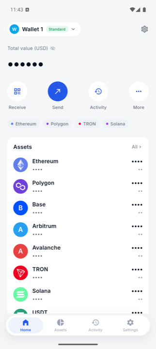
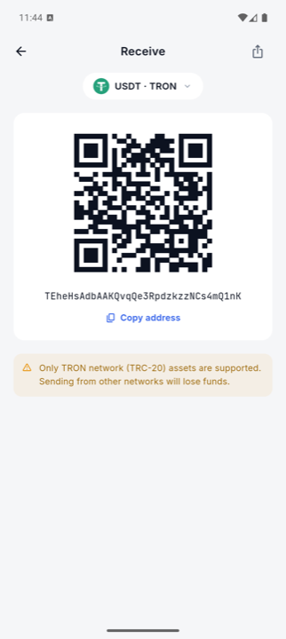

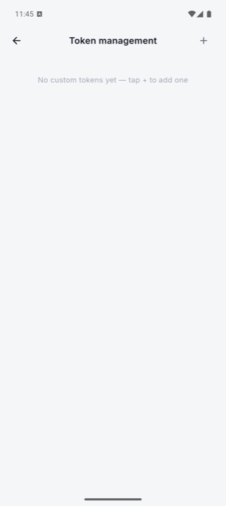
F-13 的判定性验证
修复前后都用真实节点验证,而不是只看测试通过:
修复前 · Nile 账户 nonce 与余额纹丝不动,链上零新交易
形状验证 · 去掉 raw_data → NullPointerException(与 App 报错逐字一致)
形状验证 · /wallet/broadcasthex + 完整 protobuf → 节点完整解析并回显 raw_data
修复后 · 9563f5a6…470ee72f 原生 TRX @ block 69536787
修复后 · 7a061622…f25ea602 TRC-20 USDT SUCCESS @ block 69536790